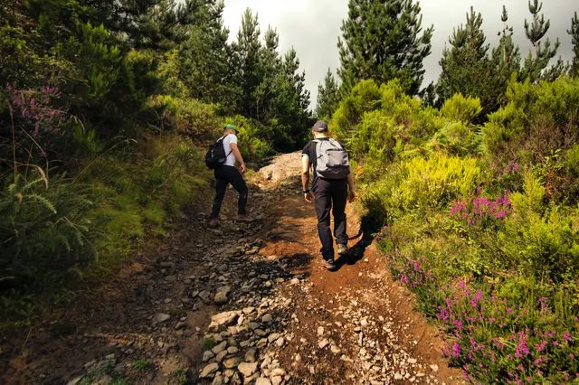

Bir parkta yürürken zihnimizin biraz hafiflediğini, bir ağacın gölgesinde daha rahat nefes aldığımızı fark etmiş olabiliriz. Bu tanıdık deneyimler, doğayla kurduğumuz ilişkinin nereden geldiği sorusunu doğuruyor. Biyofili bu soruya verilen etkili yanıtlardan biri; ancak doğaya yakınlığın herkeste aynı olduğu ya da her yeşil alanın sağlığı iyileştirdiği kanıtlanmış değil.
Biyofili ne demek?
Biyofili sözcüğünü Erich Fromm 1964’te yaşamı sevme ve yaşama yönelme fikri içinde kullandı. Edward O. Wilson ise 1984’te yayımlanan Biophilia kitabıyla kavramı, insanların diğer canlılara ve doğal süreçlere duyduğu ilgiye ilişkin bir evrimsel hipotez olarak tartıştı. Bu yaklaşım, doğayla bağımızın yalnızca kişisel zevkten ibaret olmayabileceğini öne sürer; ama “insan doğayı doğuştan aynı şekilde sever” biçiminde kanıtlanmış bir yasa değildir.
İnsanlık tarihinin büyük bölümünün doğal çevrelerle iç içe geçtiği doğru. Fakat buradan beynimizin tek bir eski manzaraya göre biçimlendiği ya da modern kentlerin doğası gereği bize zararlı olduğu sonucu çıkmaz. Biyoloji, kültür, yaşam koşulları ve kişinin geçmiş deneyimleri birlikte düşünülmelidir.
Doğal manzaralar neden çekici gelebilir?
“Savana hipotezi”, suya erişim, görüş alanı ve korunma olanağı gibi özelliklerin bazı manzaraları çekici kılmış olabileceğini öne sürer. Bu, geçmiş çevrelerle bugünkü tercihleri ilişkilendiren açıklayıcı bir modeldir; herkesin aynı manzarayı seçtiğini kanıtlayan evrensel bir kural değil. İnsanların doğa deneyimleri ve estetik tercihleri kültürden kültüre, hatta aynı kentte yaşayan kişiler arasında bile değişebilir.
Araştırmalar bize ne söylüyor?
Doğada geçirilen zamanla dikkat, ruh hâli ve stres göstergeleri arasındaki ilişkiyi inceleyen çok sayıda çalışma var. Örneğin Berman ve çalışma arkadaşlarının küçük ölçekli deneyinde, doğa yürüyüşünün ardından bazı dikkat ve çalışma belleği ölçümlerinde iyileşme görüldü. Bu sonuç ilgi çekici olsa da, tek bir deney herkes için geçerli bir etki büyüklüğü ya da belirli bir yürüyüş süresi önermez.
Roger Ulrich’in 1984 tarihli hastane çalışması, ameliyat sonrası iyileşen hastalarda pencereden görülen manzara ile bazı sağlık sonuçları arasında ilişki bildirdi. Çalışma önemli bir başlangıç noktasıdır; fakat tek bir hastane örnekleminden bütün hastaneler veya tüm doğa deneyimleri için kesin sonuç çıkarmak doğru olmaz. Daha yeni araştırmalar da yeşil alanlarla sağlık ve iyi oluş arasında olası bağlantılar buluyor; erişim, güvenlik, hava kalitesi ve sosyoekonomik koşullar gibi etkenler bu sonuçları değiştirebilir.
Kısacası “doğada vakit geçirmek herkesi iyileştirir” demek için kanıt yeterli değil. Daha temkinli ifade şu: Bazı doğal ortamlar birçok kişi için dinlenmeyi ve iyi oluşu destekleyebilir; etkinin ne kadar ve kimde görüldüğü bağlama bağlıdır. Bu bulgular tıbbi bakımın yerine geçmez.
Dikkat ve dinlenme
Rachel ve Stephen Kaplan’ın geliştirdiği Dikkat Restorasyonu Teorisi, günlük işlerin yoğun biçimde odaklanma gerektirdiğini; daha yumuşak ve ilgi çekici uyaranlar sunan çevrelerin zihinsel dinlenmeye yardımcı olabileceğini öne sürer. Yaprakların hareketi ya da kuş sesleri bu tür uyaranlara örnek verilebilir. Teori, her park yürüyüşünün dikkati otomatik olarak “yenilediğini” söylemez; kişinin ihtiyacı, ortamın niteliği ve yürüyüş deneyimi önemlidir.
Biyofilik tasarım: Doğayı kente taşımak
Biyofilik tasarım, doğal öğeleri ve doğayla ilişki kurma imkânlarını binalara ve kamusal alanlara katmayı amaçlar. Gün ışığı, bitkiler, doğal malzemeler, manzaraya erişim ve açık alanlar bu yaklaşımın parçaları olabilir. Bunlar yalnızca estetik ayrıntılar değildir: Kentte yeşil alanların kimler için erişilebilir olduğu, güvenli ve bakımlı olup olmadığı da yaşam kalitesini belirler.
Bu yüzden “doğayı binaya eklemek” tek başına yeterli bir çözüm değildir. Gölge, temiz hava, yürünebilir sokaklar ve herkesin kullanabildiği parklar birlikte düşünülmelidir. Biyofilik tasarımın başarısı, görsel etkiden çok günlük yaşama nasıl katkı sunduğuyla değerlendirilmelidir.
Kent yaşamı ve ruh sağlığı
Kentte yaşamak ile bazı ruh sağlığı sonuçları arasında ilişki bulan araştırmalar var; ancak bu ilişkiyi tek başına gürültüye, kalabalığa ya da yeşil alan eksikliğine bağlamak mümkün değil. Gelir, konut koşulları, sosyal destek, ayrımcılık ve sağlık hizmetlerine erişim gibi etkenler de önem taşıyor. Birlikte görülen iki durum, birinin diğerine doğrudan neden olduğunu tek başına göstermez.
Doğaya erişimi bu nedenle kişisel bir “kaçış” ya da herkesin aynı biçimde ihtiyaç duyduğu bir lüks olarak değil, iyi planlanmış ve adil dağıtılmış kamusal çevrenin parçası olarak düşünmek daha yararlı.
Doğayla bağ, korumaya dönüşür mü?
Doğal dünyaya yakınlık, çevreyi korumaya yönelik ilgiyi besleyebilir; fakat bu bağ tek başına koruma davranışını garanti etmez. Bilgi, ekonomik koşullar, kurumlar ve alınan kararlar da belirleyicidir. “Doğa yoksunluğu bozukluğu” ifadesi Richard Louv’un popülerleştirdiği bir anlatım biçimidir; tanınmış bir tıbbi tanı değildir.
Sonuç: Büyük iddialar yerine yaşanabilir çevreler
Biyofili, insanın doğayla ilişkisini düşünmek için verimli bir çerçeve sunuyor; ama bu ilişki tek bir genetik dürtüye indirgenemez. Araştırmalar, doğal çevrelerin bazı insanlar için dinlenme ve iyi oluş bakımından yararlı olabileceğine işaret ediyor. Bundan çıkarılabilecek pratik sonuç da kesin reçeteler vermek değil: Kentleri daha yeşil, erişilebilir ve yaşaması kolay hâle getirmek; etkileri ise dikkatle ölçmek.
Kaynaklar ve ileri okuma
- Fromm, E. (1964). The Heart of Man: Its Genius for Good and Evil. Harper & Row.
- Wilson, E. O. (1984). Biophilia. Harvard University Press.
- Orians, G. H. & Heerwagen, J. H. (1992). “Evolved Responses to Landscapes.” In The Adapted Mind. Oxford University Press.
- Kaplan, R. & Kaplan, S. (1989). The Experience of Nature: A Psychological Perspective. Cambridge University Press.
- Berman, M. G., Jonides, J. & Kaplan, S. (2008). “The Cognitive Benefits of Interacting with Nature.” Psychological Science, 19(12), 1207–1212. doi:10.1111/j.1467-9280.2008.02225.x.
- Ulrich, R. S. (1984). “View Through a Window May Influence Recovery from Surgery.” Science, 224(4647), 420–421. doi:10.1126/science.6143402.
- Bratman, G. N. et al. (2019). “Nature and mental health: An ecosystem service perspective.” Science Advances, 5(7), eaax0903. doi:10.1126/sciadv.aax0903.
- World Health Organization Regional Office for Europe (2016). Urban green spaces and health: a review of evidence.